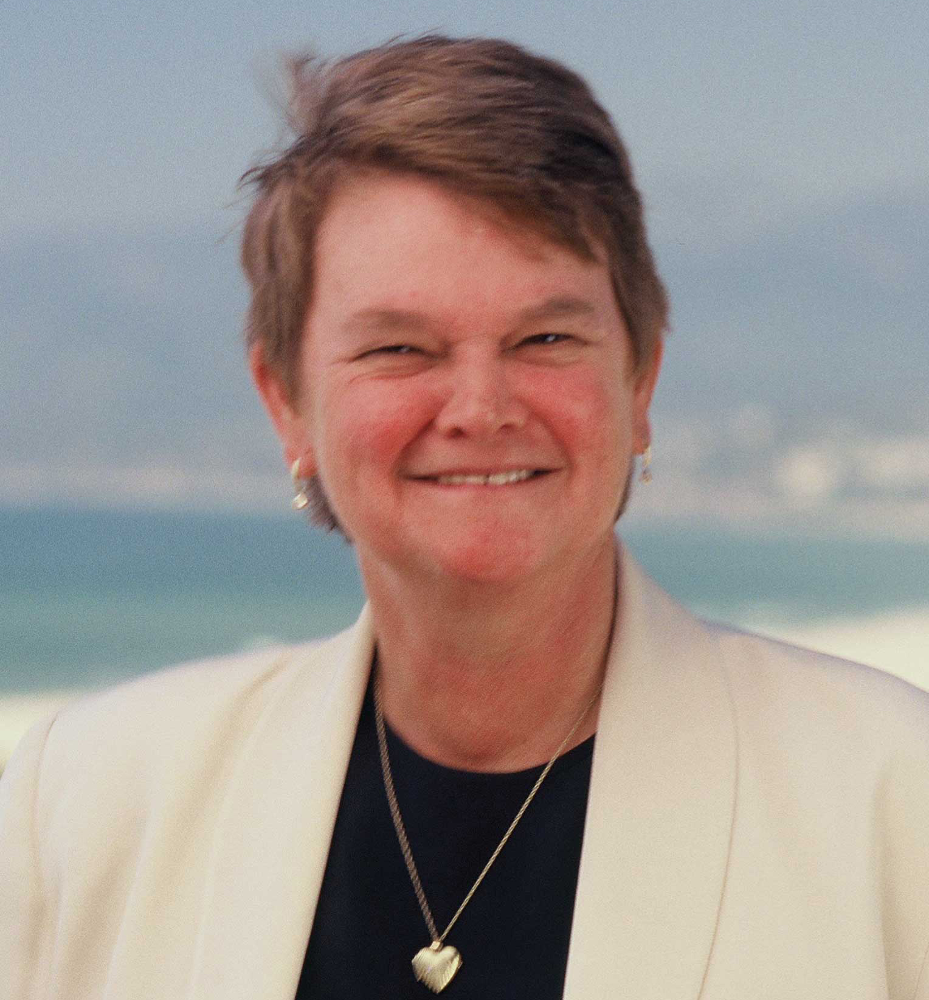

|
||
Jerry Brown |
||

|
||
Ted Lieu |
||
|  | ||
Sheila Keuhl |
||

|
||
Sandra Fluke |
||

|
||
Sebastian Ridley-Thomas |
||
|
1
|
||
YES |
||
|
2
|
||
YES |
||
|
45
|
||
NO |
||
|
46
|
||
NO |
||
|
47
|
||
YES |
||
|
48
|
||
YES |
||
|
P
|
||
NO |
||
For the fourth time in as many decades, Californians have the option of choosing Democrat Jerry Brown to be their governor.
It’s an easy choice to make.
Brown, who is finishing up his third term in the state’s highest office, has an impressive track record of fiscal responsibility, forward-thinking policy-making and extensive experience navigating Sacramento’s political coalitions.
In his most recent term, Brown has successfully turned California’s dire financial crisis around, saving the state from almost certain bankruptcy and even managing to get state legislators to turn the state budget in on time the last four years in a row. His main victory comes in balancing the state budget for 2014, a remarkable feat considering the state was verging on default when he took office. Moreover, under his watch, California has gone from a multibillion-dollar deficit to a $1.9 billion surplus at the end of 2013, the first time there has been leftover cash in the state coffers since 2007.
But Brown has also been a responsible governor when it comes to legislation affecting the University of California. In 2011, he signed the California Dream Act, allowing undocumented students to have access to both state and private financial aid for higher education. More recently, Brown also signed the “yes means yes” bill into law, mandating an affirmative consent standard on college campuses.
However, this board has extreme reservations about Brown’s hesitance to allocate excess funding to the UC. He was a major proponent of Proposition 30 in 2012, which raised taxes in an effort to bring millions in relief to the UC, but time and time again, he has shown an unwillingness to further institutional state support for the UC.
Another issue with Brown is his lack of transparency – his decision to shut down the website, http://www.transparency.ca.gov, in 2011, created by the Schwarzenegger administration to consolidate financial documents for easy public perusal, raised many red flags.
His September veto of three separate bills aimed at increasing government transparency, AB 194, AB 400 and AB 2058, is also cause for alarm, but ultimately does not diminish his general record of success.
Brown’s opponent in this election is Republican and investment banker Neel Kashkari. Having served as interim assistant secretary of the Department of the Treasury's Office of Financial Stability, Kashkari has big government experience, but lacks the coalition-building and party navigation skills that make Brown such a strong contender. While his primary platform goals of fixing public education, increasing jobs and making higher education more affordable are nice on paper, his practical plans for creating substantial policy changes are generally vague.
Overall, Brown’s experience and track record make him a more viable and capable choice for the state’s chief executive
With Henry Waxman’s impressive 40-year career in the House of Representatives coming to an end, a freshman – attorney Elan Carr or State Sen. Ted Lieu – will be taking his place as the U.S. representative of California’s 33rd congressional district.
This board believes that Lieu’s experience with legislation as a state senator and his pragmatic platforms and plans for office set him apart as the best choice for the position.
Lieu comes into this race with three years of experience as a California state senator, working extensively with legislation.
Lieu has authored and introduced dozens of pieces of legislation, many signed by the governor, supporting important issues ranging from banning sexual orientation change therapy for minors to protecting children from sex offenders to increasing protections for journalists.
Lieu’s platforms, like improving public education and strengthening the Affordable Care Act, are as strong as Carr’s, but he stands out as the better candidate with his concrete understanding of how to reach these goals. He was able to name legislation and congressmen, in line with his platforms, that he intends to support if elected, and if he ever needs to author legislation himself, we know he has the experience to be successful.
Furthermore, Lieu set out criteria by which voters could gauge his success as a freshman congressman, including obtaining grants for wildlife corridors and transportation for this district and constituent services. Lieu’s understanding that a freshman congressman will likely not draft or pass any legislation demonstrates a strong grasp of the limitations of the job.
Carr’s platforms and plans for office are well-intentioned and fairly moderate, but his inability to show true understanding of how to achieve his goals in Congress holds him back.
Carr said public education and comprehensive immigration reform are two of his top priorities, and his goals of reaching across party lines and getting work done immediately are important for a freshman coming into today’s Congress. But his platforms and ideals only sound like buzz words without the proper foundation and experience to turn them into a reality.
Lieu shares Carr’s goals of reaching across party lines and getting work done, but he has to actually put these ideals into practice during his time as state senator. We believe that he’ll be able to do it again in order to successfully represent California’s 33rd congressional district.
This board endorses Sheila Kuehl for the 3rd District seat on the Los Angeles County Board of Supervisors because of her experience in the California legislature and her dedication to advocacy.
Eight years as a state senator and six as a state assemblywoman will serve Kuehl well if she is elected this week. After managing a budget four times larger than she would in the supervisor seat, she is equipped to understand complex funding systems at the county level.
The UCLA alumna approaches her work with a profound understanding of the importance of standing up for marginalized communities and ensuring that the law protects the powerless. She learned this partially from firsthand experience with discrimination for being lesbian, even allegedly losing interviews because of it. At UCLA, she said she was kicked out of a sorority when her friends learned she loved a woman.
As a senator, she wrote laws to guarantee workers paid leave and to protect students and school staff from discrimination for their sexual orientations. She also co-founded the nonprofit California Women’s Law Center, which works to produce legislation to protect women from assault and discrimination.
On the job, Kuehl would have to oversee county prisons, the correctional system for youth and family welfare programs. A seat with this power requires a leader who knows what inmates and youth need. Her attention to mental health patients in jail and her strategy of diversion for low-level offenders make Kuehl right for the position. Her plans to offer additional support to foster care youth past the age of 18 and increase collaboration between child welfare programs will also benefit the county.
While her opponent Bobby Shriver also supports diverting mentally ill people from jails, Kuehl’s stronger background in advocacy work makes her the more qualified candidate for this task.
Like Shriver, she supports an incremental minimum wage increase to $15.37 an hour. While Kuehl plans to use her alliance with unions, Shriver has said he supports providing tax breaks for companies. Unlike Shriver, Kuehl is rightly skeptical that tax relief for companies will stimulate the economy.
L.A. County needs a leader who is dedicated to fighting discrimination and searching for ways to help the marginalized. Coupled with her history of advocacy, Kuehl’s experience helps ensure that county dollars and policies will be used and implemented with attention to groups who need the most care.
This board endorses Sandra Fluke for State Senate for her concrete platforms that emphasize social justice. Though Fluke is new to the 26th district, we believe she will bring a much needed, fresh perspective to the Senate.
Fluke gained national recognition after testifying to members of Congress about the need for birth control to be covered by health insurance. If elected, she said she plans to continue advocating for issues of gender equality and health care access, among other issues. The focus on sexual health is especially important for a representative of UCLA, since a state audit found that the university does not do enough on sexual assault education.
In an interview with this board, Fluke expressed her support for California’s new “yes means yes” law, indicating that she is willing to tackle controversial legislation.
Fluke is also one of the few candidates for any office to pointedly campaign for the rights of the LBGT community and the transgender community specifically. She’s helped pass equal employment legislation and worked to ensure that domestic violence shelters accept all victims, regardless of their sexuality. Issues of basic equality should always be top priority, and Fluke has the knowledge and educational background to fight for them.
Both Fluke and her opponent, Ben Allen, are campaigning on issues of environmental sustainability, transportation reform and veteran resources among other topics. Both seem equally equipped to take on these issues at a state level, though Fluke has more experience helping state senators pass legislation.
Compared to Allen, who is a native of the district, Fluke has relatively little experience working with the UC system. Allen attended UC Berkeley School of Law and served as a student regent on the UC Board of Regents from 2007 to 2008. He is also currently a lecturer at the UCLA School of Law.
In his year as a student regent, he was able to push through a sustainability measure that secured more LEED lighting and sustainable food. But Allen’s familiarity with the UC system does not automatically make him qualified for the lofty task of securing more state funding for the University.
Allen is currently a member of the Santa Monica-Malibu Unified School District, where he developed a “Cradle to Career” initiative to strategize a way to ensure more children have access to higher education. Achievements in a singular school district, although honorable, do not prepare a candidate for advocacy on the state level.
Although Allen has more experience in the district he is campaigning for, Fluke’s progressive platforms makes her a better candidate for state senate.
The board endorses Sebastian Ridley-Thomas to continue representing the 54th district in the California State Assembly.
Ridley-Thomas has served as the representative for the district since December 2013, when he was voted into office during a special election.
Since then, Ridley-Thomas has focused on a number of issues, most notably public health. His primary concern seems to be improving state-funded mental health care, particularly targeting communities with little to adequate care or those who are at high risk for chronic homelessness.
Ridley-Thomas said he has been particularly concerned with the way the state handles the mentally ill homeless. In the wake of an incident where a California Highway Patrol officer beat a mentally ill homeless woman who wandered onto the 10 Freeway, Ridley-Thomas held a special joint committee hearing with law enforcement officials to discuss their policies regarding the mentally ill.
When asked about higher education, Ridley-Thomas discussed the importance of funding and investing in the University of California system. When pushed for details on how that investment should be made, Ridley-Thomas asserted that the most effective way to invest in the UC was to invest in students, notably through stronger financial aid packages for in-state undergraduates.
In his short term, Ridley-Thomas has already proven his chops in Sacramento, demonstrating concrete success as a legislator. One measure he proposed, which allows the California Department of Justice to cross-reference databases to determine whether confiscated firearms are legally owned, was recently signed into law by Gov. Jerry Brown. Ridley-Thomas was also involved with the passing of the affirmative consent or “Yes Means Yes” bill earlier this year.
Moreover, Ridley-Thomas is a strong proponent for the repeal of Proposition 209.
While he noted that the measure is most associated with higher education admissions, Ridley-Thomas added that in order to help the repeal effort, advocates will need to focus on demonstrating the other costs Proposition 209 has, particularly in terms of how it affects business-sector job opportunities for women and minorities, stifling economic mobility.
While Republican challenger Glen Ratcliff brings an important focus on small-business issues and a desire to reform the California tax code to the table, his statements on most issues were fairly vague and lacked concrete ideas for how to affect change in higher office.
Ratcliff's ideas about how to change K-12 education lacked both specifics and a practical understanding of how the state curriculum is set, and in particular, his statements regarding abolishing the minimum wage were particularly troubling to the board.
California is in the midst of one of the worst droughts in its history, and while the billions raised through Proposition 1 won’t go towards buying rainwater, it still represents a positive step toward securing the state’s water future.
The $7.12 billion proposal has allocations for certain water projects like ecosystem and watershed protection and improvements in drinking water quality, with the largest chunk – about $2.7 billion – going to water storage projects.
The money will flow into California’s aging water infrastructure, while also helping to develop a system that can reliably supply water in future years.
Of course, the projects outlined in the proposition don’t come cheap. The bond proposal is expected to cost the state $360 million annually over the next 40 years.
However, not all the cost will be distributed to California taxpayers. A provision in the proposition requires certain projects to provide matching funds from non-state sources in order to receive bond funds.
Californians last voted on a water bond in 2006, approving $5.4 billion for water projects. In 2005, voters approved Proposition 50, which gave $3.4 billion for water projects.
All this goes to show that Proposition 1 won’t be the last hard decision voters will have to make to secure California’s water future, but the measure represents a necessary part of the solution of supplying water to an increasingly thirsty state.
Opponents of the proposition have said that it is a waste of taxpayer money and beholden to special interests who plan to use the funding for dams to benefit large agricultural companies instead of the average Californian.
But the current version of the proposition is already an updated version of an earlier $11.1 billion proposal which was pulled from the ballot and cut down for being too pork-laden.
The fund allocation for water storage projects also has no specific allowance toward dams. Instead, the independent California Water Commission is charged with identifying and supporting what they consider to be beneficial water projects.
An analysis of the proposition by the non-partisan Pacific Institute noted that the measure’s effectiveness in addressing California’s water issues is contingent on how the commission performs in finding and pursuing effective water projects.
Proposition 1 won’t solve all the problems surrounding the current drought, but it will put plans in place that will help the state weather future water woes.
Despite several concerns, the Daily Bruin Editorial Board supports Proposition 2.
The proposition would create a rainy day fund with better controls than the state’s previous attempt at establishing economic stability through an emergency fund.
California’s economy is especially prone to unexpected ups and downs, and as such the state needs to take precautions to ease the impact of substantial economic downturns.
Although the governing principles behind Proposition 2 are sound, the ballot measure’s regulation of school districts is not perfect.
The language that would restrict school districts from exceeding a cap in reserve funds should be repealed, since local officials are more well-equipped to dole out funding or save it for harder times than state lawmakers who work from Sacramento. The power to make financial decisions should remain in the hands of those with the most intimate knowledge of individual districts’ needs.
Furthermore, although this board supports the creation of a new rainy day fund to help ensure economic stability, we urge Gov. Jerry Brown to focus on increasing funds for higher education should the ballot measure succeed.
With the new safety net in place, Brown must make strides toward restoring levels of state support to the University of California. Because the state has been operating under a surplus, Brown should shift money toward higher education at the same time the state saves for the future.
As state funding stands, the UC is likely facing tuition increases in the very near future. State support for the UC system saw dramatic decreases in the past 20 years, to the point that student tuition now pays for more of the UC budget than state allocated dollars. Although Brown has consistently urged the UC to maintain tuition and avoid rises in costs for students, without growing state support, the University will be forced to raise tuition levels. If California cannot support its university systems, the economy will suffer – with or without the fund.
This board supports Proposition 2, but hopes the investment in economic stability extends to higher education. With more money in its reserve coffers, we hope that Brown and the state will offer increases to public education without worrying for California’s future economic status.
This board does not endorse Proposition 45 for the Nov. 4 ballot.
This measure would give the state insurance commissioner the ability to review and approve health insurance rates for individual and small group plans, striking down those that are excessive or unfair. The commissioner already has the power to review and strike down rates for auto insurance after the passage of Proposition 103 in 1988, which has saved Californians a considerable amount of money on auto insurance.
We support giving the state insurance commissioner the ability to extend his oversight powers to health insurance premiums. But Proposition 45 is not the way to accomplish that.
The measure is deeply flawed and fails to account for changes to California’s health insurance market wrought by the Affordable Care Act and the creation of Covered California, our state’s individual exchange market.
As an individual exchange market, Covered California negotiates prices with health insurance companies and gives consumers the ability to compare plans side by side. Throwing on another layer of regulation could disrupt the negotiated agreements Covered California is making with health insurers and ultimately undermine the effectiveness of the Affordable Care Act.
This is particularly true because all of those regulations would have to be sorted out and implemented in a very strict timeline. Health care premiums differ from other types of insurance in that they are set only once a year, and consumers only have one window of time – the state’s annual open enrollment period – to sign up for their plans.
If Proposition 45 succeeds, there is a plethora of bureaucratic steps that must be taken to implement the new regulations before the open enrollment period begins. This lengthy process would require the insurance commissioner to review and approve or strike down rates after Covered California finishes negotiations with health care providers.
But the initiative fails to provide a timeline for the insurance commissioner to follow, and that lack of structure creates the potential for chaos in an already precarious system.
It’s still early, but so far, Covered California seems to be an active marketplace that’s succeeding in holding down rates for consumers. Adding another layer of regulation that does not consider the effects of the independent exchange could derail Covered California’s progress.
Proposition 46 requires voters to make several important decisions about the future of their medical care and how it will be regulated in one comprehensive ballot measure.
A stronger state prescription database, a higher pain and suffering cap for medical malpractice lawsuits and drug and alcohol testing for certain medical professionals – would lead to greater accountability and safety among medical practitioners in the state of California. But this board endorses a vote of “No” on Proposition 46, because the logistical concerns this proposition raises and potential financial impacts far outweigh its intended benefits.
California currently ties for the lowest medical malpractice lawsuit damages cap in the nation: a maximum of $250,000 for pain and suffering, with additional damages possible to cover the economic effects of injuries caused by medical malpractice.
This cap needs to be raised in the coming years. A higher cap would ensure more legal help for patients who have economically suffered from medical malpractice and hold the medical community accountable for its patient care.
At the same time, the unknown costs of raising the pain and suffering cap to $1.1 million overnight provide reason for skepticism. Costs for medical care facilities in California would increase anywhere from “tens of millions of dollars to several hundred million dollars annually,” according to the Legislative Analyst’s Office.
The proposition also calls for the random drug and alcohol testing of certain physicians. This board does not take issue with state-organized drug and alcohol testing of physicians in the event of medical mistakes or surgical errors, a move that could significantly reduce court costs. With no particular aim and no clear evidence of pervasive drug and alcohol use among doctors, however, randomized tests could prove wasteful due to significant administrative costs.
Proposition 46’s final measure would force providers to check the Controlled Substance Utilization Review and Evaluation System, or CURES, a prescription drug distribution database. The move would curb the efforts of many “doctor shoppers,” or those seeking excessive amounts of prescription drugs, and limit the number of harmful pharmaceutical drugs disbursed. It is one this board approves if the state is willing to ensure all providers in the state are registered as soon as possible.
Proposition 46 aims to implement several measures that would, on the whole, improve the individual doctor’s practice of medicine. Its potentially overwhelming costs, however, indicate the need for more research and planning with respect to malpractice law and drug and alcohol use among physicians.
We strongly endorse a yes on Proposition 47 because it will reduce exorbitant prison spending and redirect the savings to programs that are proven to help reduce crime such as school truancy prevention.
If passed, Proposition 47 would require misdemeanor sentences for the lowest level nonviolent crimes currently classified as felonies, such as certain drug possession and petty theft. It would also require resentencing for people serving felony sentences for these crimes.
The initiative presents a chance for Californians to reverse some of the devastating consequences of overcharging people for nonviolent crimes, a practice that perpetuates mass incarceration.
By far, the U.S. outpaces all other democracies in incarceration. Although Americans make up roughly only 5 percent of the world’s population, we hold a quarter of the world’s prison population. The rate of incarceration in the United States has quadrupled since 1970, and more than half the inmates in state prisons are serving terms for nonviolent crimes.
In California, state prisons are so overcrowded that the federal judges ruled them a gross violation of civil rights and ordered a cap on the number of inmates in 2009. This prompted an ill-conceived and costly prison realignment plan from Gov. Jerry Brown that shuffled thousands of inmates in state prisons to county jails, but did little to change the situation.
Despite lackluster results, state spending on corrections and rehabilitation increased by nearly $2 billion since 2011 when Brown began implementing his realignment plan.
The nonpartisan Legislative Analyst’s Office estimates that the effects of Proposition 47 could eventually result in annual savings of hundreds of millions of dollars while allowing the state to really reduce – not just relocate – the prison population by several thousand inmates. They also estimate that counties could save several hundreds of millions of dollars annually, mostly from easing jail capacity.
Savings in the state budget from Proposition 47 will be earmarked for programs that effectively improve public safety and help rehabilitate former convicts, including K-12 dropout prevention, mental health and drug treatment and services for victims of crimes.
We believe Proposition 47, backed by prominent law enforcement officers, Los Angeles Unified School District and Los Angeles City Council , is a meaningful opportunity to scale back unjust, disproportionate sentencing for nonviolent crimes, a civic injustice with destructive social and economic consequences.
This editorial board endorses a “yes” vote on proposition 48.
Proposition 48 would allow a casino to be built by the North Fork Rancheria of Mono Indians off-reservation in Madera County. It would also prevent the construction of another casino by the Wiyot tribe in Humboldt County, who would instead be paid a share of the Madera casino’s earnings.
Legislation surrounding Indian gaming casinos specifies casinos can only be built on reservation land, in an effort to ensure that they only benefit the tribes living on that land and not private corporations. Proposition 48 would set a precedent in California for “reservation shopping,” the practice of allowing tribes to pick and choose where casinos are built.
In this case, reservation shopping should be allowed because a casino for the North Fork tribe could prove to be a huge economic boon for a historically disadvantaged group. Tribal gaming is a lucrative industry, taking in $7 billion each year. The Madera casino would generate approximately 4000 jobs, creating employment opportunities for a tribe with 69 percent of its population in poverty and 29 percent without jobs.
Opponents of this proposition say allowing the North Fork tribe to build a casino off their reservation would set a dangerous precedent for the proliferation of gambling in urban areas. But these opponents primarily comprise established Indian gaming casinos interested in stifling competition.
All tribes deserve an equal chance at improving the welfare of their communities which have long been and continue to be marginalized. Although opponents of the proposition have urged the North Fork tribe to build their casino on their original settlement in the Sierra National Forest, this land has been unable to garner investment because it is difficult to reach by car.
Thus, it is only fair that the North Fork tribe be allowed to build a casino elsewhere, at a location that would realistically help raise the North Fork tribe out of poverty.
While it is important to regulate gambling and keep its benefits restricted to Native American tribes, each case should be judged on its individual merits. As long as the initiative is primarily in a tribe’s interest and does not harm the economy or environment, reservation shopping should not pose a problem.
Securing land for parks is a serious undertaking for any county government.
In the most populous county in the United States, doing so requires a substantial amount of financial backing and commitment of taxpayer dollars –but when that funding already exists, it can’t be overdrawn.
This board endorses a “No” vote on Measure P. While the $23 per parcel tax proposed by Measure P would provide Los Angeles County with a significant financial base to acquire and develop parklands, provide funds for gang prevention and job training programs among other goals, the existence of two park taxes in Los Angeles County with similar goals raise questions about the immediate need of these funds.
In 1992, county voters approved Proposition A, which provides $54 million annually to fund recreational areas and community programming. This proposition also allowed the county to purchase open space for parks and refurbishment of local historical landmarks like the Hollywood Bowl. This was followed up by a 1996 parks tax assessment that collected $28 million per year to cover maintenance and acquisition costs for county parks.
Proposition A runs out on June 30, 2015, but the 1996 park tax assessment will continue to pool money until June 30, 2019, which begs the question of whether Proposition P will be redundant, unnecessary tax until 2019. If the funds exist at the county level and will continue to draw in funding, the county should wait until the next election for a more specifically allocated tax.
Measure P was not placed on the 2014 ballot by the Los Angeles County Board of Supervisors until August, giving the voting community little time to sink its teeth into the actual workings of the tax prior to November’s voting period. A lack of actual itemization – the tax’s distribution is listed by percentages in the text of the proposition – shows there is no extensive plan on the county’s part. Two additional years to plan would help the county create a better, more complete allocation the tax.
This board also questions the flat-rate taxation policy listed in Measure P. Instead of following Proposition A’s lead and charging county residents based mostly on property size, each parcel would be charged $23 annually. We believe this pulls a significant amount of the financial burden from the county’s wealthy property owners and places it on property owners who might have the same or higher value for these parks and programs, but to whom $23 means significantly more.
This fee structure hasn’t been given a clear explanation. Neither has the distribution of taxpayer dollars. Both factors should not inspire confidence among voters in Los Angeles County.